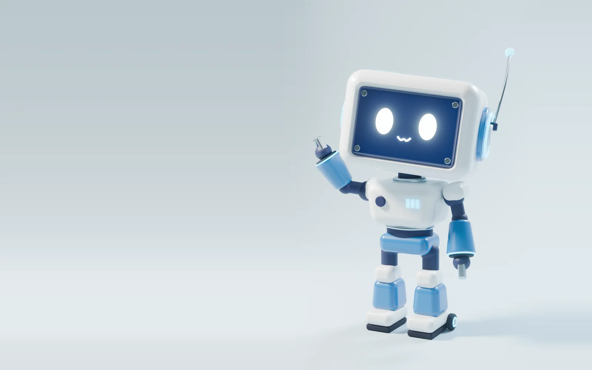

Alu is the only joke.
His face, his wobble, his wave. The interface around him never jokes: no emoji, no bounce, no illustrations, no exclamation marks.
An engineering lab with the finish of an Apple product page. The surfaces are calm and soft. Everything placed on them is real evidence of the work. Alu is the only thing allowed to be playful.
The first screen, mocked with the current Alu render. Floating controls are glass. Focus Alu (hover, tap or the button) and the lab layer appears: the camera eases in slowly, the callouts snap in fast.

Every later decision should be checkable against these. If a new element breaks one, the element changes.
His face, his wobble, his wave. The interface around him never jokes: no emoji, no bounce, no illustrations, no exclamation marks.
Surfaces are calm and smooth. What sits on them is lab evidence: CAD, dimensions, training numbers, the parts that make the thing work.
Nothing is annotated at rest. Focus an artifact and thin leader lines name its parts and sizes. Look away and they retract.
Every corner is rounded, from a chip to the 4 m portal. Radius grows with size and never passes a quarter of the short side.
Cyan appears only on things that are on: Alu's eyes, the portal light, the focused callout, the line you are reading in a chart. Everything at rest is white, grey or navy.
The camera and Alu move on slow, damped springs. Labels, callouts and panels arrive in under 220 ms and never overshoot.
A headline makes one claim in six words or fewer. Body text says what it is, why it exists and how well it works, with real numbers.
Rounded corners read as toy-like when every surface gets the same big radius. Here the radius scales with the object, and full pills are reserved for buttons and floating chrome.
Geist Sans carries headlines and prose. Geist Mono labels anything measured, dated or named by a machine. Use the tuner to compare a quiet 500 headline with an Apple-style 600.
TomatoBot is an autonomous harvesting robot. A YOLOv11 model sorts tomatoes into six ripeness classes at 88% real-world accuracy, and a 6-DOF arm driven by inverse kinematics does the picking from a Raspberry Pi.
Three levels, nothing in between. A case study opening over the scene shows all three at once.
Nav, chapter chip, close button. Blur 20 px, 64% white or navy, a 1 px light edge, a soft navy shadow. One line of text at most.
The case-study sheet and the menu. Opaque surface, large radius, the deepest shadow on the page. Text never sits on glass.
No fill, no shadow, no nested cards. Hairlines and mono labels do the dividing.
An autonomous tomato-harvesting robot that sees ripeness and picks on its own, running at the edge on a Raspberry Pi.
Your CAD files become the artifacts, and the callouts point at them. Your graphs are redrawn from the raw numbers with the same hairlines, mono labels and single blue.
Real values from the JeevI repo (PROFILE.md §3). The training curves themselves should come from your TensorBoard or CSV exports.
The world runs on a slow clock with springs. Instruments run on a fast clock with no overshoot. Alu is the only thing allowed to overshoot.
| Layer | Moves like | Duration | Curve |
|---|---|---|---|
| Chrome, labels, callouts | An instrument | 120–220 ms | cubic-bezier(.2,.7,.2,1) |
| Sheets, menu | A drawer | 320 ms | cubic-bezier(.2,.7,.2,1) |
| Camera | A dolly on rails | 600–900 ms | Critically damped spring, no roll, no shake |
| Alu | A character | Per clip | Springs; overshoot allowed here only |
| Threshold | One-off | 2.4 s | Skippable with any key or tap |
Rounded corners, pale blue and a cute robot are each fine. Childish happens when they stack up with bounce, pastel fills and emoji. These lines stop that.
Use the tuner at the bottom of the page. Every mock above updates live, in both themes.
600 is closer to Apple's product pages and holds up over the 3D. 500 is quieter and more editorial. Recommended: 600 for display and H1/H2, 500 everywhere else.
Crisp reads most technical, soft reads most consumer. Recommended: balanced (12 / 16 / 24), which matches Alu's own shell without making the panels feel inflated.